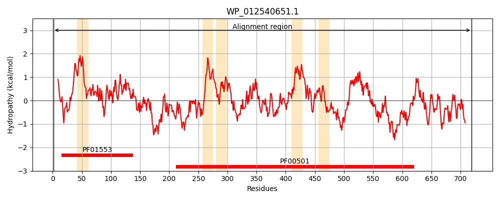
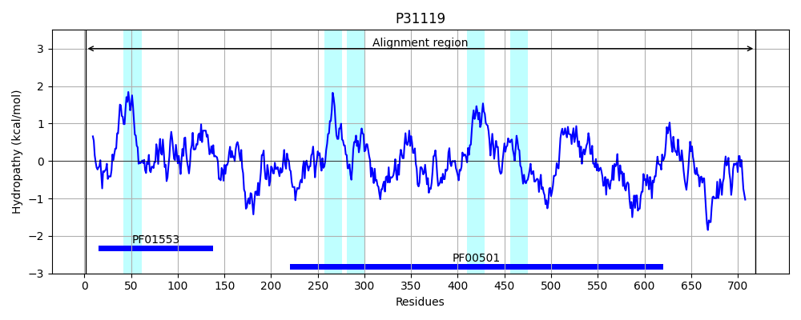
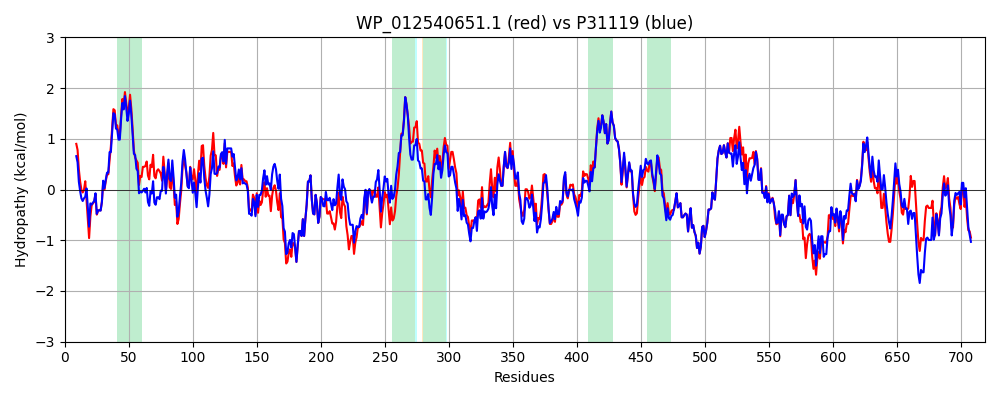

Hit Accession: P31119
Hit TCID: 4.C.1.1.16
Hit Description: gnl|BL_ORD_ID|9748 gnl|TC-DB|P31119|4.C.1.1.16 Bifunctional protein Aas OS=Escherichia coli (strain K12) GN=aas PE=1 SV=2
Mach Len: 719
e:0.000000
Query TMS Count : 5
Hit TMS Count: 5
TMS-Overlap Score: 4.900000
Predicted Substrates:CHEBI:4984;fatty acid
BLAST Alignment:
Score: 3170 , Bit scores: 1225 bits, E-value: 0.0e+00, Alignment length: 719, Percentage identity: 85
Query: 1 MLLGFFRLLFKGLYRVRLTGDTQALYQQKVLITPNHVSFLDGILLALFLPVRPVFAVYTSISQRWFMRALTPIIDFVPLDPTKPMSIKHLVRLIEQGRPVVIFPEGRISVSGSLMKIYDGAAFVAAKSQATIVPLRIDGAELTPFSRLKGLVKRRLFPRIQLHLLPPTHLPMPEAPRARDRRKIAGEMLHQIMMEARMAVRPRETLYESLLAAQDRFGARKPCVEDINFQPDTYRKLLTKTLFVARILEKYSQRGEKIGLMLPNAGISAAVIFGAIARGRIPAMMNYTAGVKGLSSAIAAAEINTIFTSRTFLDKGKLWHLPEQLTQVRWVFLEDLKGDITLADKLWIFGHLLAPRLAQVKQQPEDAAMILFTSGSEGNPKGVVHSHKSLLANVEQIKTIADFTANDRFMSALPLFHSFGLTVGLLTPLFTGAEVFLYPSPLHYRVVPELVYDRNCTVLFGTSTFLANYARFANPYDFYRLRYVVAGAEKLQESTKQLWQDKFGLRILEGYGVTECAPVVSINVPMAAKVGTVGRILPGMDARLLAMPGIEQGGRLQLKGPNIMKGYLRVENPGVLEAPAAENQHGEKEAGWYDTGDIVTFDEQGYVRIQGRAKRFAKIAGEMISLEMVEQVALGASPDKMHATAIKQDASKGEALVLFTTDNELTREALLRYARQHGVPELAVPRDIRWLKQLPVLGSGKPDYVTLKNMVDEAETTHE 719
ML FFR L + LYRVR+TGDTQAL ++VLITPNHVSF+DGILL LFLPVRPVFAVYTSISQ+W+MR L IDFVPLDPT+PM+IKHLVRL+EQGRPVVIFPEGRI+ +GSLMKIYDGA FVAAKS AT++P+RI+GAELT FSRLKGLVKRRLFP+I LH+LPPT + MP+APRARDRRKIAGEMLHQIMMEARMAVRPRETLYESLL+A RFGA K CVED+NF PD+YRKLLTKTLFV RILEKYS GE+IGLMLPNAGISAAVIFGAIAR R+PAMMNYTAGVKGL+SAI AAEI TIFTSR FLDKGKLWHLPEQLTQVRWV+LEDLK D+T ADK+WIF HLL PRLAQVKQQPE+ A+ILFTSGSEG+PKGVVHSHKS+LANVEQIKTIADFT NDRFMSALPLFHSFGLTVGL TPL TGAEVFLYPSPLHYR+VPELVYDR+CTVLFGTSTFL +YARFANPYDFYRLRYVVAGAEKLQESTKQLWQDKFGLRILEGYGVTECAPVVSINVPMAAK GTVGRILPGMDARLL++PGIE+GGRLQLKGPNIM GYLRVE PGVLE P AEN GE E GWYDTGDIV FDEQG+V+IQGRAKRFAKIAGEM+SLEMVEQ+ALG SPDK+HATAIK DASKGEALVLFTTDNELTR+ L +YAR+HGVPELAVPRDIR+LKQ+P+LGSGKPD+VTLK+ VDEAE E
Sbjct: 1 MLFSFFRNLCRVLYRVRVTGDTQALKGERVLITPNHVSFIDGILLGLFLPVRPVFAVYTSISQQWYMRWLKSFIDFVPLDPTQPMAIKHLVRLVEQGRPVVIFPEGRITTTGSLMKIYDGAGFVAAKSGATVIPVRIEGAELTHFSRLKGLVKRRLFPQITLHILPPTQVAMPDAPRARDRRKIAGEMLHQIMMEARMAVRPRETLYESLLSAMYRFGAGKKCVEDVNFTPDSYRKLLTKTLFVGRILEKYSVEGERIGLMLPNAGISAAVIFGAIARRRMPAMMNYTAGVKGLTSAITAAEIKTIFTSRQFLDKGKLWHLPEQLTQVRWVYLEDLKADVTTADKVWIFAHLLMPRLAQVKQQPEEEALILFTSGSEGHPKGVVHSHKSILANVEQIKTIADFTTNDRFMSALPLFHSFGLTVGLFTPLLTGAEVFLYPSPLHYRIVPELVYDRSCTVLFGTSTFLGHYARFANPYDFYRLRYVVAGAEKLQESTKQLWQDKFGLRILEGYGVTECAPVVSINVPMAAKPGTVGRILPGMDARLLSVPGIEEGGRLQLKGPNIMNGYLRVEKPGVLEVPTAENVRGEMERGWYDTGDIVRFDEQGFVQIQGRAKRFAKIAGEMVSLEMVEQLALGVSPDKVHATAIKSDASKGEALVLFTTDNELTRDKLQQYAREHGVPELAVPRDIRYLKQMPLLGSGKPDFVTLKSWVDEAEQHDE 719 | Protein Hydropathy Plots: |
|---|
|  |  |
Pairwise Alignment-Hydropathy Plot:
|
|---|
|  |